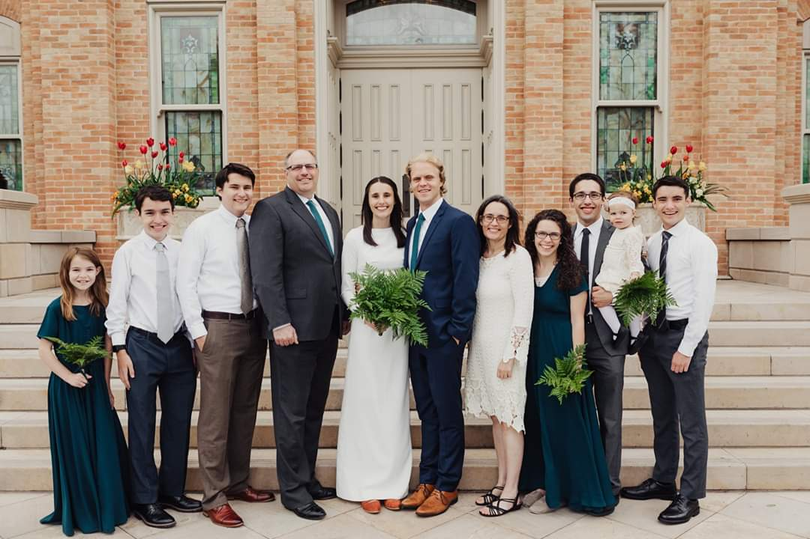

My Family and Background
My family is so important to me. I have five siblings, two older and three younger. My oldest brother is married and has two daughters (one was not born yet when the picture above was taken). My older sister is also married (the picture above is of her wedding). I have a younger brother attending BYU, a nother younger brother about to graduate high school and a little sister starting high school.
I am from the Seattle, Washington area (a place called Puyallup), and I spent my whole life growing up there. When I graduated high school I attended Brigham Young University in Provo, Utah. After a year of school, I volunteered as a full-time representative for the Church of Jesus Christ of Latter-day Saints, serving in Manchester, England. I loved my time there and it has shaped me into who I am today.
My Interests
Astronomy
I love astronomy and studying and learning about the oter space around our planet. There is something about contemplating the vast expanse of space and everything in it that gives clarity and strength during difficult times.
Perhaps it's because of the wide range of possibilities and the unknown that engages me. The following video is one of my favorites. It features the touchdown of a probe on Titan, a moon of Saturn.
Music

I also love music. I play the violin (and most orchestral string instruments), the piano, and the guitar. I love sitting down and playing my favorite songs, as well as writing my own. I also love to sing. I participated in musicals throughout high school and now I participate in choirs and small group singing.
The Outdoors

I love the outdoors. I love to hike, camp, explore anywhere. It's one of my favorite parts of being here in Utah with all the state and national parks that litter the state. My favorite place to hike has been the Enchantments , in the Cascade Mountain Range in Washington State. I hiked it with my family the summer of 2021 and we spent the whole day hiking over 22 miles of extreme elevation gain and loss. The views were worth it, as it felt at times like we were on a different planet.
Contact Info:
Email:
bradens_fake_email@gmail.com
Phone Number:
(253) 668-7325